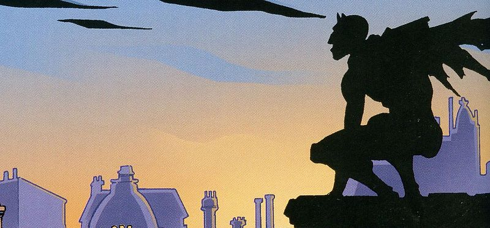

My name is Ivan Pomorisac, and I am an aspiring freelance content/article writer. On this page you will be able to see all of my work, which currently consists of 32 articles, that were originally written in Serbian, which I have taken the time to translate into English, so that you may be able to see my work in the apropriate way. If you do like what you see, and my type of writing suits you well, please do not hesitate to contact me at pomorisacivan@gmail.com, or at my Upwork profile https://www.upwork.com/freelancers/~01491a1611cf4d8d3a.
In the long past year of 1839, at the beginning of England’s Victorian Era, rumours started to circle of a mysterious figure that was wandering through the villages near London. Under the veil of darkness, it would attack women, tearing up their clothing with its claws…
This description would suit yet another masked figure - except that Batman would focus on criminals instead of young women.
The rumours about him spread quickly, thanks to the fact that his first close encounter with an 80-year-old Jane Aslop was published, along with his description. She insisted that it was a monster: “it spat blue and white flames” and it “tore my neck with its claws”.
Many people of that time believed that Spring-heeled Jack - as they have called this creature - was in fact a monster capable of moving at an incomprehensible speed and that it sometimes leapt 6 meters into the air.
The official response was that all of these sightings were linked to a letter which was sent to the lord mayor of London, published earlier in early 1838:
“It seems like some individuals have made a bet about an ominous and inconsiderate friend (still of an unknown name), who does not dare to accept the blame on himself for visiting a lot of villages near London, being disguised as three figures - a ghost, a bear and a devil.” Many have suspected the aristocrat Henry Beresford, Marquess of Waterford, a man which was renowned in the city during that time - however, nothing has been proven. (Wait a second! A famous, powerful young man who was suspected to be the ominous figure and who was under the cover of darkness? Did Bruce Wayne have a Victorian great grandfather?) And so, the legend rose of the aristocrat that wandered the villages, terrorizing young women, in a similar fashion as had Jack the Ripper 50 years later in London itself.
In the coming decades, rumours about Jack and his foul deeds spread further - even though reports of him became rarer, people across England talked about mysterious attacks on post chariots, women being assaulted, and up until 1877, they even talked about groups of soldiers being attacked by the figure.
Rumours about it being a demon which was summoned by occult devil worshipers have spread, it was even said that it was not of this world - it was seen in a similar fashion as Batman was by the criminals he was chasing at the beginning of his crime-fighting career.
Things became even more strange… After 1870, rumours about Jack became rarer. Eventually, he started to emerge in works of fiction. His first appearance was as a melodramatic anti-hero, then, sometime later, he emerged as some kind of superhero.
The thing is, Spring-heeled Jack was finished long before Batman’s creation.
During the late 20th century, Jack began to reemerge - he even traversed the Atlantic ocean, having his first appearance in Northern Carolina in 1973 - described as “a skinny, long-haired man with pointy ears and glowing red eyes, who leapt 50 to 65 feet into the air.”
Texas locals saw that “the creature was 6 feet tall, had pointy ears, and jumped across the football field in just a couple of leaps - like an astronaut on the Moon.” in 1979.
Even to this day, Jack still appears.
Allegedly, in 2012 it terrorized a family in England, which claimed that it saw as “the mysterious figure without a face” ran across the road in front of them before it jumped over a 4 meter fence which stood across the road from them.
Many still believe that Jack is a demon, or an alien, but the true source of his many appearances is not really out of this World. Sceptics have long pointed out that the sightings as are Jack’s, usually just stories which by ways of plagiarism or creation of mass hysteria become urban legends. That is how, according to this version of the story, although indirectly, Batman came to be.
Return to topBitcoin was legalized in Germany for the purpose of paying taxes, which makes Germany the first country that uses this online currency as a regular one. Berlin recognized the virtual tender as a current currency and private money, according to the the german newspaper Die Welt.
Classification actually means that some commercial profits which are connected with Bitcoin may be taxed, however, personal use of this online currency still remains freed from taxes, the paper reported.
The recognition of Bitcoin was actually published by the Ministry of Finance, when Frank Schäffler, member of parliament of the financial committee wrote: “For the first time, the government recognizes and approves of Bitcoin as a personal currency.”
In July, the first company for trading Bitcoins was established in Germany by direct cooperation with the banks that regulate the Authority for Financial Supervision. Bitcoin Deutschland GmbH agreed to make Bitcon transactions happen on its platform as an intermediary, through Germany’s Web 2.0 bank, Fidor.
Bitcoin was a very popular payment method since its emergence in 2009., as a product of people’s disappointment in the conventional payment system. In the meantime, the validity of Bitcoin as a currency was in question, because it lacked approval of the US Government and the Central Bank.
In the beginning of august, the federal judge in Texas declared that Bitcoin is a legitimate currency. The decision was made after Trendon Shavers, a thirty-year old businessman, was charged for setting up ponzi schemes, where he stole 4.5 million dollars worth in crypto currency by conning his customers through online hedgefonds. He claimed that Bitcoin is not real money, and that it should therefore not to be regulated by the US Government. However, the court rejected his claim.
This decision took Bitcoin one step closer to be recognized as a real currency. Still this same decision created a possibility that the virtual currency be regulated by the Government, which is in opposition with Bitcoin’s original concept of peer-to-peer, relatively anonymous payment.
The people that support this virtual currency point out that the usage of it protects them from theft and credit card fraud. The critics, however, note that the absence of regular protection systems makes theft more likely, while the sceptics constantly ask questions about exchange rates, the risk of loss of profit and the rigidity of its acquiring.
The group that supervised Bitcoin, asked that the total value of crypto currency be limited to $21 million. At this time, the value of a single bitcoin is estimated to be arour $110.
Return to topDo you know how the kid from your neighbourhood spent his free time on burning ants with a magnifying glass? This is the same thing - except that instead of using a magnifying glass, he is using a big ol’ Fresnel lens. Instead of frying insects, he is melting sand into glass objects!
Designed by the artist Markus Kayser, the SolarSinter concept is not that different from laser sintering printers used by corporations such as SpaceX to print objects from metals that would normally be impossible to do. Although a focused sun ray is far less precise than a finely tuned laser, in its essence, the concept is still the same.
Return to topThe German manufacturer of luxury vehicles, BMW, unveiled to the World its first electric vehicles, which will go through mass manufacturing this Monday.
BMW i3 has a grill in the shape of the unique BMW logo, but what lays underneath the bonnet does not resemble his brethren at all. The i3 has an electric engine with 170hpw and a lithium-ion high voltage battery which can keep the car in motion anywhere between 120 and 160km under one charge. This four seat vehicle can be charged via a regular electrical socket, public charging stations or with a special BMW Wallbox charger.
The i3 is also available with the optional distance extender - a two cylinder gas powered engine of 34hpw which is located next to the electric motor. Although it may seem somewhat contradictory to the green goals of this car, this engine extended the maximum travel distance of this vehicle to 300 kilometers. The car has a speed limit of up to 150 km/h due to safety reasons, according to BMW.
With a weight of about 1195 kg, the hatchback styled car has an aluminium chassis and a carbon fibre cabin. The car is also paired with BMW’s iRemote application (which supports both iOS and Android phones), which contains data about the charge level of the car battery, her health, the location of the car, as well as service messages on your smartphone.
The i3 will first be released for sale in Germany and other European markets in November. BMW said that the base price of the i3 in Germany will be 34950 euros. The electric car will be released for sale in the US, China and Japan in the first half of 2014. In the US, the car will start selling at the price of $41,350 or for $45,200 for the extended range model.
This move of BMW could rush competitors such as Mercedes-Benz or Audi to bring their electric technologies to the market. The i3 makes room for itself in the growing electric vehicle market; it is not par with the expensive as Tesla, however it has a far more refined looked that other electric cars e.g. Nissan Leaf and Chevy Volt.
As time moves on, there could be more electric cars from BMW as the German manufacturer has unveiled conceptual details about the i8 model, a hybrid electric sports car. In addition, Mini, which is under the ownership of BMW, is testing the electric version of its little car MINI E.
What do you think about the new i3? Would you like to have one in your garage some day or would you prefer other electric vehicles?
Return to topAt today's San Diego Comic-Con, Sony Pictures gave its first glimpse of the upcoming RoboCop remake. Stars Joel Kinnman, Abby Cornish, Samuel L. Jackson, Michael Keaton and director Jose Padilla were present and available during the projection of the title’s trailer, which is set to be released in 2014.
The first scene to be shown is a TV news sequence which reports on OmniCorp’s commission of fighting droid and the ED 209 during the American occupation of Iran during Operation Freedom. The news reporter who is within the robotic army unit talks about their success in peacekeeping, however, we can see that they are actually terrorizing unarmed civilians, at which moment the ground started shaking and the OmniCorp droids turned lethal. This entire TV news sequence was lead by Pat Novak, a reporter on a TV station which resembles Fox News (Jackson described the character as Russ Sharpton, like a fusion of the famous duo of Russ Limbo and Al Sharpton).
In this Robocop, police officer Alex Murphy(Kinnman) did not kill the cruel criminal with his mercenary crew, he wasn’t actually killed at all. He was badly wounded by a car bomb which left him with burns all over his body. To save him and give OmniCorp their desired cybor protector of justice, Omni scientist dr Norton (Gary Oldman), amputated Alex’s body from the neck down and reconstructed him into RoboCop (they keep Alex’s right arm as a human element when Robocop is shaking people’s hands).
There were a couple of scenes with the director of OmniCorp, Raymond Sellars (Keaton), a man that believes in his products and in what they can do for the World, who makes his decisions not so that he could become the villain, but rather he decided that it was the best business decision for what he thinks that he can offer. Keaton described Sellars as more of an antagonist than a villain.
There was no equivalent to the completely evil Clarence Boddicker villain in the clip that we saw, however we saw a lot of night vision footage, which look like first-person video games, from the perspective of different armed assaulters which were stupid enough to attack RoboCop.
Another difference from the original movie is that Murphy’s wife, Clara, is still beside him, since he is not dead. Her efforts to recognise something human in what Alex has bercom and his inevitable tendency to do the same, is apparently what leads the story rather than some story about some great villains.
Generally, RoboCop looked decent. Honestly, the footage was not enough to dismiss the concerns that can be had for this project. It could be surprisingly good like Judge Dredd 3D, or it could become stale and disappointing as the Total Recall remake. We shall see, although, if the intention bringing a new RoboCOp to Comic-Con was to show the fans how different the movie was from the original, and how the new approach to RoboCop can work, then they have succeeded in that (By the way, the new suit looks pretty good in motion, so stop worrying about the pictures from the set).
Return to topThis morning, the Alienware 13 laptop was announced, who will go down in history as the first laptop which will be completely involved in the gaming world. The laptop itself represents an upgraded version of the Alienware 14, except that that in itself is no big news, however, he has the ability to connect with a proprietary external device that you have dreamed about.
With a simple name, the Alienware Graphics Amplifier is a proprietary device in which you can insert a PCI express graphics card. The price of the device itself, without the graphics card, is 300 euros. For now, the device can only be connected to the ALienware 13 laptop, while it was announced that it is going to be able to connect to the revised versions of bigger models such as the Alienware 14, 17, and 18, all of which will have the required port.
The Alienware Graphics Amplifier comes with a 460W PSU, a PSIe x16 slot and can support graphics cards of up to 375W TDP. It has all the necessary 6-pin and 8-pin power connectors, so it can support more powerful graphics cards, whose power consumption is quite substantial. The device is 18cm wide and 40 cm long. To connect the device, you need to have the proprietary cable, which represents a combination of USBa and PCI express.
When starting up the Alienware Graphics Amplifier, the graphics card of the Alienware 13 laptop is completely ignored, and according to that, when the device is turned off, the graphics card of the laptop resumes with its normal functionality. For now, no magazine had the opportunity to test out this device, however we have official data about its performance from Alienware. Because Alienware is in good standing as a manufacturer of high-end machines, we can say with certainty that the data that we can see in the next picture are correct. With the exception of some rare games that are limited by the processor’s power. The Alienware Graphics Amplifier should be able to give you the same performance as desktop computers.
The question is: will Alienware (Dell) want to share this patent with other laptop manufacturers? The cable represents a combination of USBa and PCI express, which means that, if Dell will stand by the standards this way of connecting will be able to be implemented by the rest of the manufacturers. Just imagine that you have an Alienware Graphics Amplifier on your job, or at home, and that you can connect it with any available laptop. Wouldn’t that be great? Please take a look at the following clip to see what’s it all about.
Return to top